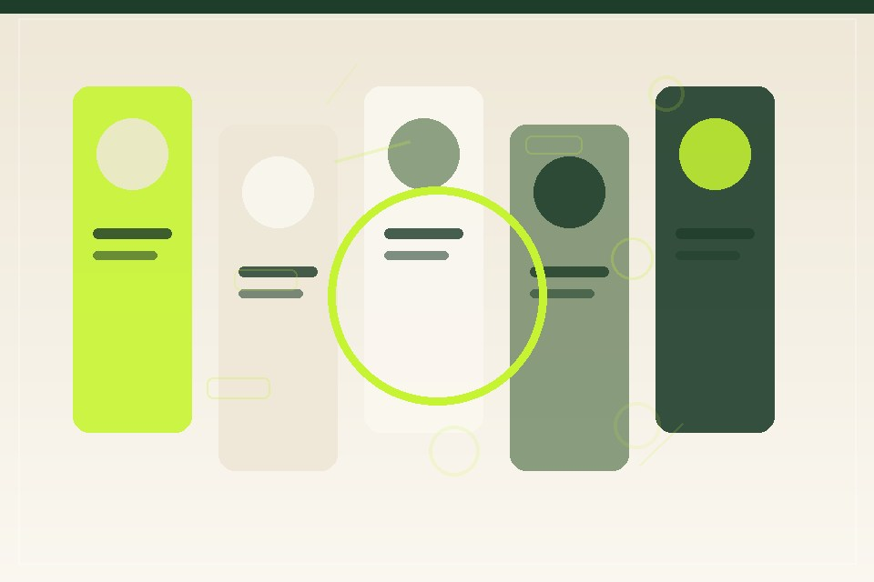

PRODUCT DESIGN
Orbit workspace
A calmer way to organize complex team projects.
Independent product designer · Available for select projects
I turn tangled ideas into thoughtful digital products people can understand and enjoy.
Open to select collaborations

Curiosity, made useful.Selected projects
A glimpse at how I think through product problems and shape clear, useful experiences.
PRODUCT DESIGN
A calmer way to organize complex team projects.
UX RESEARCH
Turning everyday observations into an easy research habit.
PRODUCT STRATEGY
Helping people make sense of their monthly money picture.
DESIGN SYSTEMS
A flexible system that gives a growing product room to move.
Experience
From first conversation to a product people can use with confidence.
Partnering with small teams to turn early ideas into practical digital experiences.
Guided product direction, research, and design quality across a growing portfolio.
Built strong foundations in interaction design and collaborative product work.
Kind words
“Maya has a gift for finding the simple path through a complicated product problem.”
“The process felt collaborative, clear, and grounded in what customers needed.”
“We left with a more confident direction and a product experience that finally felt cohesive.”
Have a thoughtful challenge?